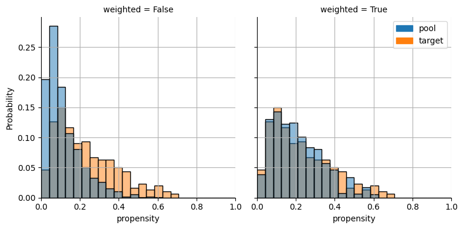
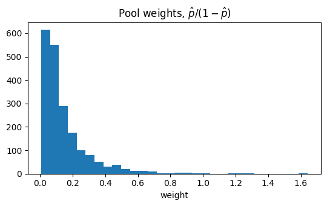
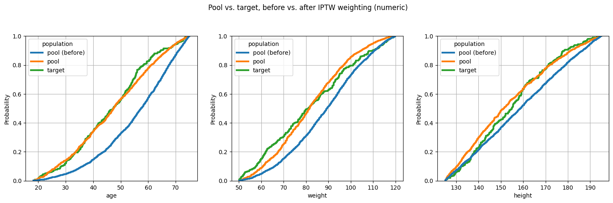
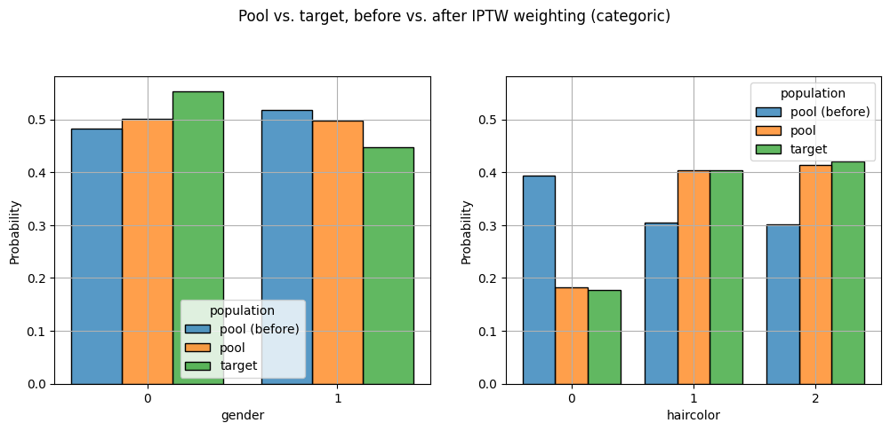
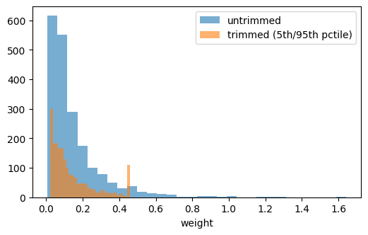

Inverse Probability of Treatment Weighting (IPTW)
IPTWWeighter is a propensity-score-based weighter: rather than selecting a subset of the pool (as the genetic/LP/propensity matchers elsewhere in pybalance do), it reweights every pool patient. It:
fits a propensity model \(p(X) = P(\mathrm{target} \mid X)\) that classifies pool vs. target patients on their covariates (
sklearn.linear_model.LogisticRegressionby default), thenweights each pool patient by the odds \(p / (1 - p)\).
The target population keeps weight 1, so this is the ATT estimand, with the target playing the role of the fixed/reference (“treated”) group – the natural fit for this package’s typical use case of reweighting a real-world data (RWD) pool to represent a trial population.
IPTW:
requires a patient-level target (there’s no pool-vs-target classification problem to fit against a published, aggregate-only Table 1);
does not guarantee exact balance on any particular moment – only asymptotically, and only if the propensity model is well specified;
is nonetheless the most widely used and reported method for this kind of reweighting in the observational literature (Rosenbaum & Rubin, 1983; Austin, 2011).
[1]:
import logging
import matplotlib.pyplot as plt
from pybalance.sim import generate_toy_dataset
from pybalance.utils import MatchingData, MatchingHeaders
from pybalance.visualization import plot_categoric_features, plot_numeric_features
from pybalance.weighting import (
IPTWWeighter,
plot_iptw_propensity_distributions,
weighted_balance_table,
)
%matplotlib inline
# show effective-sample-size / trimming diagnostics logged during fit()
logging.basicConfig(level=logging.INFO, format="%(message)s", force=True)
Synthetic data: two genuinely different, patient-level populations
IPTW needs patient-level covariates on both sides so it can fit a pool-vs-target classifier. We use generate_toy_dataset’s pool and target populations directly, with no aggregation step.
[2]:
m = generate_toy_dataset(n_pool=2000, n_target=300, seed=11)
pool_df = m.get_population("pool").drop(columns=[m.population_col])
target_df = m.get_population("target").drop(columns=[m.population_col])
headers = MatchingHeaders(numeric=["age", "weight", "height"], categoric=["gender", "haircolor"])
matching_data = MatchingData(pool=pool_df, target=target_df, headers=headers)
matching_data.describe()
[2]:
| pool | target | ||
|---|---|---|---|
| population size | N | 2000.0000 | 300.000000 |
| gender | 0.0 | 0.4830 | 0.553333 |
| 1.0 | 0.5170 | 0.446667 | |
| haircolor | 0.0 | 0.3935 | 0.176667 |
| 1.0 | 0.3045 | 0.403333 | |
| 2 | 0.3020 | 0.420000 | |
| age | mean | 55.4200 | 46.710000 |
| std | 13.1500 | 13.720000 | |
| min | 18.2700 | 18.720000 | |
| q25 | 46.6200 | 36.290000 | |
| median | 57.4700 | 47.410000 | |
| q75 | 66.1700 | 55.930000 | |
| max | 74.9900 | 74.600000 | |
| weight | mean | 88.7000 | 82.100000 |
| std | 16.4400 | 19.110000 | |
| min | 50.2200 | 50.160000 | |
| q25 | 76.7700 | 65.520000 | |
| median | 89.4800 | 81.130000 | |
| q75 | 101.1000 | 96.190000 | |
| max | 119.9500 | 119.660000 | |
| height | mean | 159.0500 | 155.180000 |
| std | 19.5900 | 17.190000 | |
| min | 125.0400 | 125.160000 | |
| q25 | 142.1000 | 140.920000 | |
| median | 158.7400 | 154.890000 | |
| q75 | 175.3700 | 167.800000 | |
| max | 194.9500 | 194.230000 |
Fit IPTWWeighter
As with the other weighters, match() fits (if needed) and returns a MatchingData with every pool patient retained, plus a new sample_weight column. weighted_balance_table() compares each feature’s target moment to the unweighted and weighted pool moment – but, unlike an exact-balance weighter, don’t expect the “weighted” column to land exactly on target.
[3]:
weighter = IPTWWeighter(matching_data, verbose=True)
matched = weighter.match()
weighted_balance_table(weighter)
IPTWWeighter fit LogisticRegression. Effective sample size: 946.5 / 2000 pool patients.
[3]:
| feature | moment | target | unweighted_pool | weighted_pool | |
|---|---|---|---|---|---|
| 0 | gender_1.0 | mean | 0.446667 | 0.517000 | 0.498286 |
| 1 | haircolor_1 | mean | 0.403333 | 0.304500 | 0.403873 |
| 2 | haircolor_2 | mean | 0.420000 | 0.302000 | 0.414048 |
| 3 | age | mean | 46.705231 | 55.417328 | 47.326641 |
| 4 | weight | mean | 82.095245 | 88.704041 | 82.229043 |
| 5 | height | mean | 155.177505 | 159.050598 | 153.852687 |
[4]:
print(f"Effective sample size: {weighter.effective_sample_size():.1f} / {len(pool_df)} pool patients")
print(f"Propensity model: {weighter.propensity_model}")
matched.get_population(matched.pool_name)["sample_weight"].describe()
Effective sample size: 946.5 / 2000 pool patients
Propensity model: LogisticRegression(max_iter=1000)
[4]:
count 2000.000000
mean 0.146556
std 0.154660
min 0.006937
25% 0.052532
50% 0.094784
75% 0.184358
max 1.642370
Name: sample_weight, dtype: float64
Checking overlap: propensity score and weight distributions
IPTW relies on positivity: every pool patient needs a realistic chance of looking like the target on the fitted model. A propensity score distribution piled up near 0 or 1, or a handful of huge weights, is the practical warning sign – the reweighting is leaning hard on a small, possibly unrepresentative slice of the pool (the same concern effective_sample_size() summarizes in one number).
plot_iptw_propensity_distributions() is the weighting counterpart to pybalance.propensity.plot_propensity_score_match_distributions(): instead of a matched subset’s “before” vs. “after” panels, it shows the same pool/target propensity scores counted equally (“before”) vs. counted by the fitted IPTW weight (“after”) – the weighted pool histogram should move towards the target’s.
[5]:
plot_iptw_propensity_distributions(weighter);

Both plot_numeric_features and plot_categoric_features accept a weights= column, so the unweighted pool (every patient counted equally) and the IPTW-weighted pool can be plotted side by side against the same target, to see what the reweighting actually bought.
[6]:
fig, ax = plt.subplots(figsize=(5.5, 3.5))
ax.hist(weighter.weights, bins=30)
ax.set_title(r"Pool weights, $\hat{p} / (1 - \hat{p})$")
ax.set_xlabel("weight")
fig.tight_layout()

To see the effect on the covariates themselves (rather than the propensity score), put the unweighted pool, the IPTW-weighted pool and the target into a single MatchingData – the same trick the matching demos use to show “pool (prematch)” alongside “pool” and “target” in one plot – and pass weights= through to plot_numeric_features/plot_categoric_features. The unweighted pool copy gets weight 1, so a single call draws all three distributions together instead of two separate
before/after figures.
[7]:
before_pool = matching_data.get_population(matching_data.pool_name).copy()
before_pool[weighter.weight_col] = 1.0
combined = matched.copy()
combined.append(before_pool, name="pool (before)")
hue_order = ["pool (before)", matching_data.pool_name, matching_data.target_name]
plot_numeric_features(
combined, weights=weighter.weight_col, hue_order=hue_order, include_only=headers.numeric, col_wrap=3
)
plt.suptitle("Pool vs. target, before vs. after IPTW weighting (numeric)", y=1.05);

[8]:
plot_categoric_features(
combined, weights=weighter.weight_col, hue_order=hue_order, include_only=headers.categoric, col_wrap=2
)
plt.suptitle("Pool vs. target, before vs. after IPTW weighting (categoric)", y=1.05);

Trimming extreme weights
The main practical failure mode of IPTW is a small number of extreme weights, driven by pool patients whose covariates make the model almost certain they’re pool (weight -> 0) or almost certain they’re target (weight -> large). trim_quantiles=(low, high) clips fitted weights at the given quantiles – a standard bias/variance trade-off: a little exact balance is sacrificed in exchange for a much more stable, lower-variance set of weights.
[9]:
trimmed = IPTWWeighter(matching_data, trim_quantiles=(0.05, 0.95), verbose=True)
trimmed.match()
print(f"Untrimmed: ESS={weighter.effective_sample_size():.1f}, max weight={weighter.weights.max():.2f}")
print(f"Trimmed: ESS={trimmed.effective_sample_size():.1f}, max weight={trimmed.weights.max():.2f}, n_trimmed={trimmed.diagnostics['n_trimmed']}")
fig, ax = plt.subplots(figsize=(6, 3.5))
ax.hist(weighter.weights, bins=30, alpha=0.6, label="untrimmed")
ax.hist(trimmed.weights, bins=30, alpha=0.6, label="trimmed (5th/95th pctile)")
ax.set_xlabel("weight")
ax.legend();
IPTWWeighter fit LogisticRegression. Effective sample size: 1148.0 / 2000 pool patients. Trimmed 200 extreme weights.
Untrimmed: ESS=946.5, max weight=1.64
Trimmed: ESS=1148.0, max weight=0.46, n_trimmed=200

Takeaways
IPTWWeighterfits a pool-vs-target propensity model and weights the pool by \(\hat p / (1 - \hat p)\); the target keeps weight 1 (the ATT estimand, target-as-reference).It requires a patient-level target – there’s no aggregate-only (“published Table 1”) variant.
It does not solve for exact balance, so always check
weighted_balance_table()andeffective_sample_size()on the fitted result, the same as for any other weighter.trim_quantilescaps extreme weights, trading a little bias for a large reduction in variance – worth reaching for whenever a handful of patients end up dominating the effective sample size.